1. 新手入门
Last Z 本质上是一个策略类战争游戏。新手阶段最重要的是快速提升战力，前期所有资源、时间和活动节奏都应该围绕战力成长来安排。
核心思路：能提升战力的内容优先做。
1.1 如何查看末日时间？末日时间和本地时间如何换算？
游戏内很多活动会使用“末日时间”。新手一定要先学会查看末日时间，并根据自己的本地时间做换算，避免错过联盟活动、全面战备和限时任务。
- 点击左上角头像，进入个人信息页面。
- 进入设置页面。
- 在设置中查看当前末日时间。
- 需要按本地时间安排活动时，可以切换或对照本地时间。
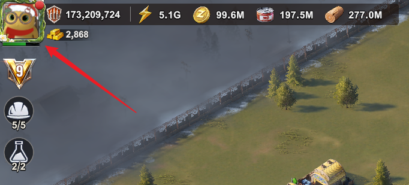
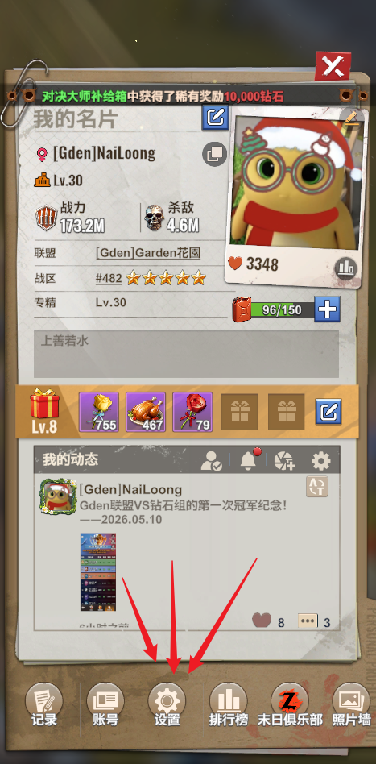
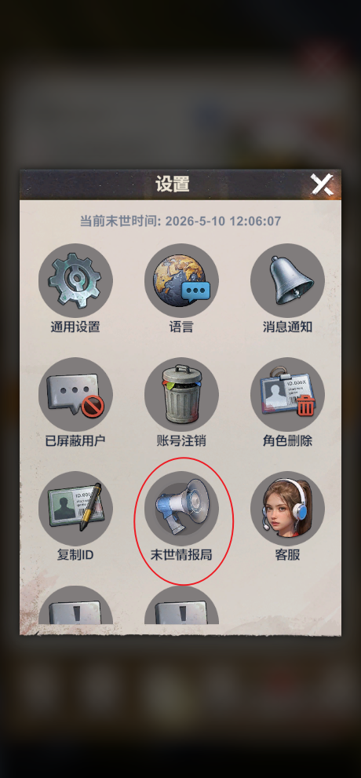
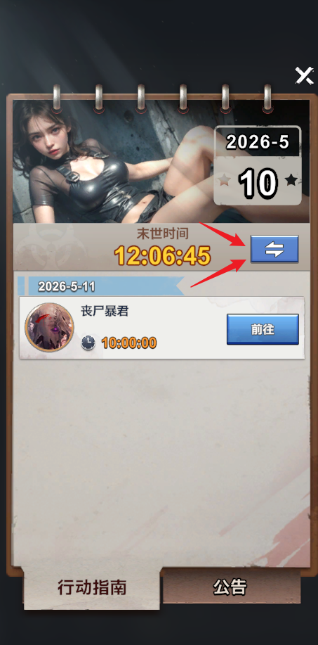
1.2 全面战备怎么玩收益最高？
全面战备建议严格按照活动中心里的日历来安排。日历会提示每天重点做什么，把资源和加速留到对应项目时使用，收益会更高。
每天的“改装车强化”是集结打巨型丧尸的时间，每天都要完成。
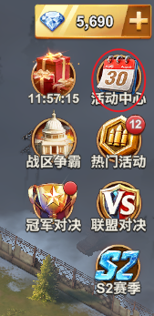
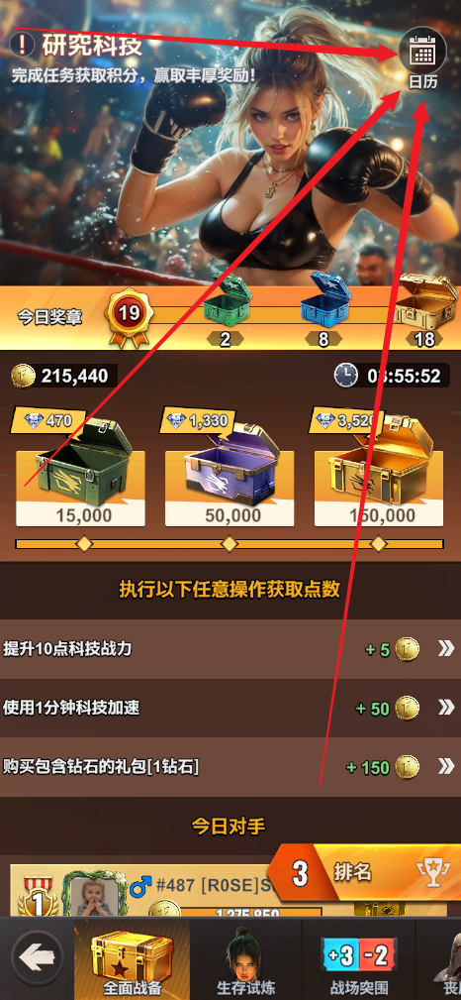
1.3 如何查看具体战力？
总战力只能看大概实力，具体提升方向要看详细战力构成。
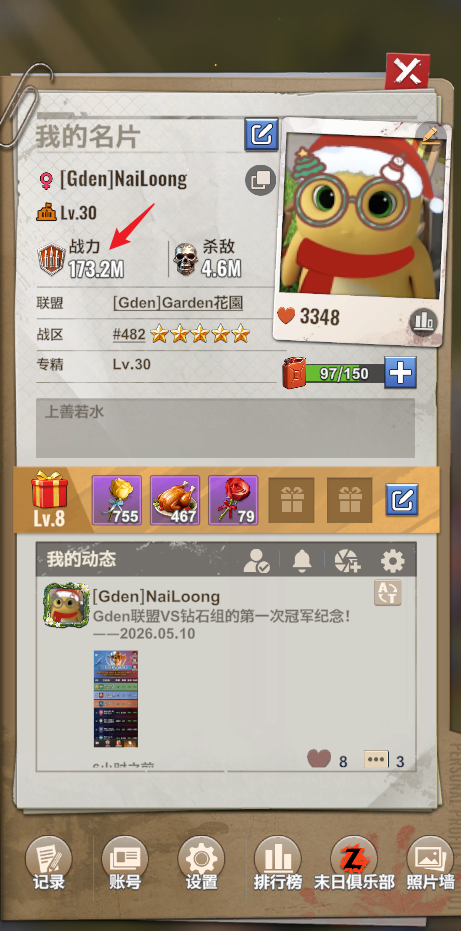
1.4 如何查看燃料回复速度？
燃料能够随时间推移自然回复，这是很多人都不知道的。
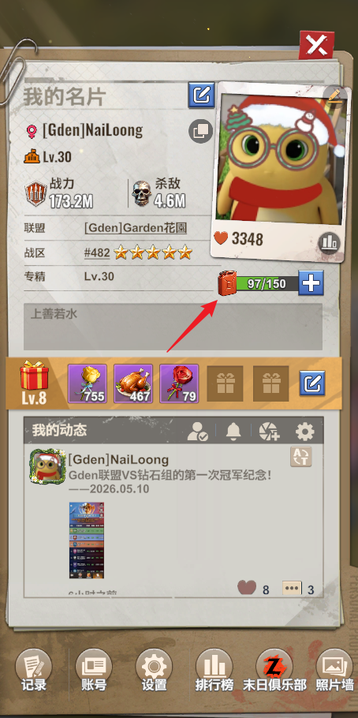
1.5 必须重视避难者，哪些避难者最强？
避难者可以提供强大的增益，新手必须尽早重视。最重要的避难者包括别墅中的管家、书店中的科学家、联盟中心中的外交官，以及兵营中的教官。
避难者升星优先选择外交官。外交官可以快速治疗伤兵和完成时间较短的建筑和科技
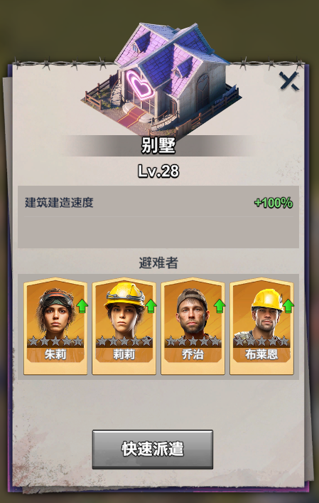
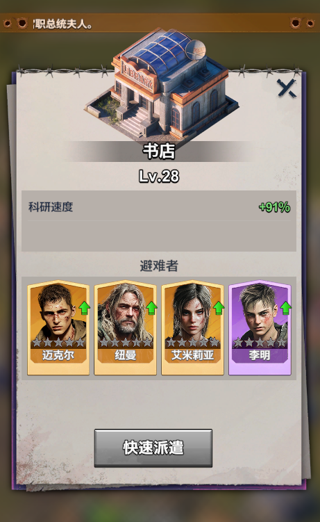
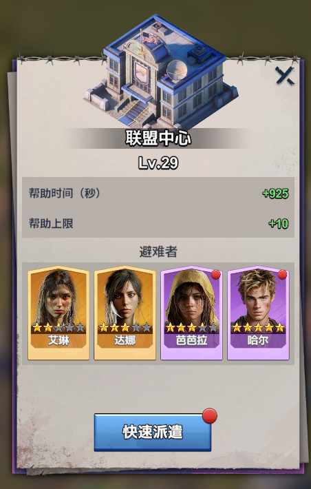
1.6 尽早加入强大的联盟
新手应尽早加入强大的联盟。强联盟通常会有更丰厚的稀有礼物，也就是成员氪金后触发的联盟礼物，这些奖励能帮助新手更快积累资源和加速道具。
同时，在战争中强大的联盟可以有效保护成员，减少被攻击、被掠夺和被持续骚扰的风险。
1.7 关注联盟聊天、联盟公告、联盟邮件
联盟聊天、联盟公告和联盟邮件都是重要信息来源。通常联盟的 R4/R5 会在这些地方发布活动安排、集结通知、战争指令、成员要求和管理规则。
新手每天上线后建议先看这些信息，避免错过关键活动或违反联盟安排。
返回目录2. 进阶技巧
2.1 钻石的用途？如何最大化利用钻石？
钻石是游戏中真正的通用货币，可以换取几乎全部重要资源，包括警徽、碎片、扳手、能源核心、资源和加速。钻石数量有限，如何最大化利用钻石，是游戏中最难的课题之一，因此放在第一位讨论。
每周 VIP 商店必买：燃油、高级迁城、扳手、警徽、能源核心、英雄碎片、改装车模组（S1 结束以后才有）。加速在钻石量充足时购买。
每日限时商店必买：燃油、警徽。
每周都会有使用钻石兑换四大稀有资源的周常活动，四大稀有资源分别是警徽、碎片、扳手、能源核心。活动顺序依次是：折扣商店（警徽）、幸运转盘（碎片）、摇摇乐（扳手）、靶场寻宝（能源核心）。
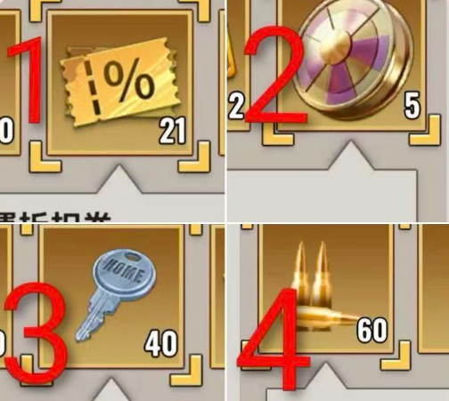
- 折扣商店：钻石必须大量投入，至少花费几万钻石。必须兑换警徽、燃油、高级迁城。打折力度大时（大于 50%）购买加速；不购买经验值和资源箱。
- 幸运转盘：钻石充足时可以一直转到出大奖。120 抽保底，每抽 400 钻石，最多 48000 钻石一定出保底。钻石不够时建议节约下来，不参加这个活动。
- 摇摇乐：钻石充足时抽到 500 钥匙，用来兑换扳手；否则建议节约下来，不参加这个活动。
- 靶场寻宝：投入 10000 钻石购买 100 发子弹。转盘转到第 12 轮，获取橙色装备后即可停止，不需要额外投入钻石。
推荐每周仓库内留存 10000-50000 钻石，用来应对各类钻石活动。不要囤积过多钻石，囤积钻石本质上不会提升战力，是对资源的浪费。
2.2 每周最多的英雄万能橙色碎片获取方式
- 每天货车只抢多碎片的货车，只发有碎片的货车，一次只发一车，并使用最强的英雄护卫货车。
- 每天完成每日任务和全面战备。
- 每周总共赠送 10 朵黄玫瑰，可以获得 6 个橙色碎片。
- 每周日的试炼丧尸打最高等级，可获得最多碎片。
- VIP 商店购买，荣誉商店购买。
2.3 掠夺每日存在上限，如何查看是否达到掠夺上限？
在邮件的战报中查看每日掠夺情况。
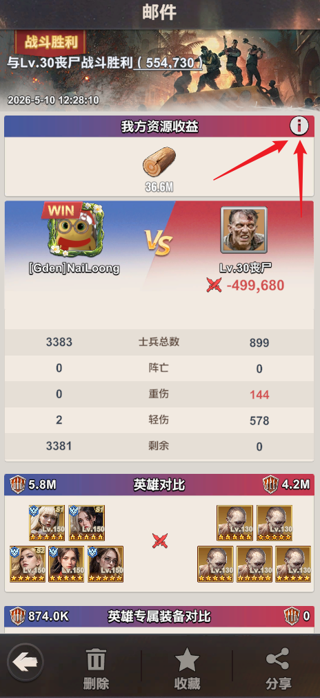
2.4 竞技场如何获得最高的排位？
定闹钟，在重置时间前 3 分钟开始打。
2.5 英雄战场如何获得最多荣耀徽章？荣誉商店购买哪些东西？
将一队英雄的装备换下给其他队使用。已经通关过的关卡可以选择重新打；每周一共会刷新3次英雄战场，每次都要通关3个不同阵营的英雄战场。这是荣誉商店的购买清单图。
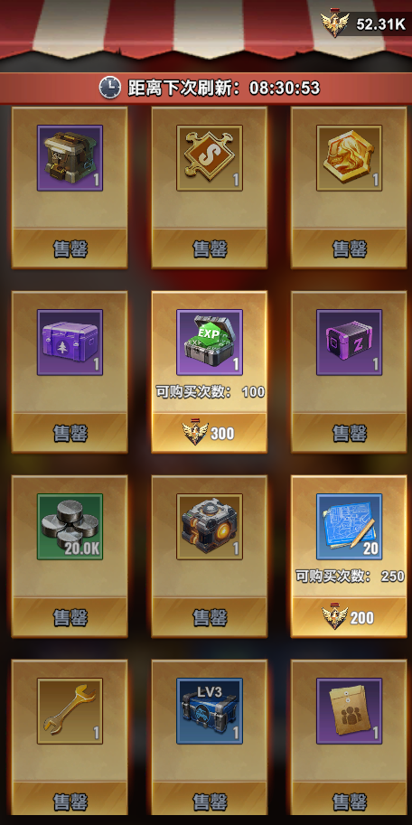
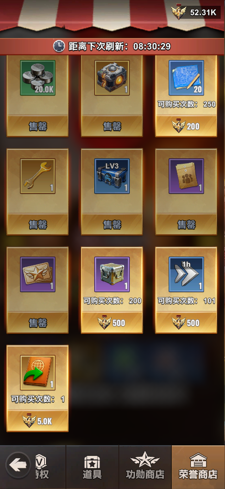
2.6 什么是援助加速？援助加速在什么时候生效？
援助加速是指派出部队增援盟友或联盟城市时，车子的移速会提高到正常移速的 400%。
生效前提：部队必须从自己总部出发才有效。
- 增援盟友生效：盟友的总部必须位于联盟领土范围内。
- 增援城市生效：全局生效。
2.7 如何跳过卡特里娜的燃油，领取定时燃料？
在设置界面领取。
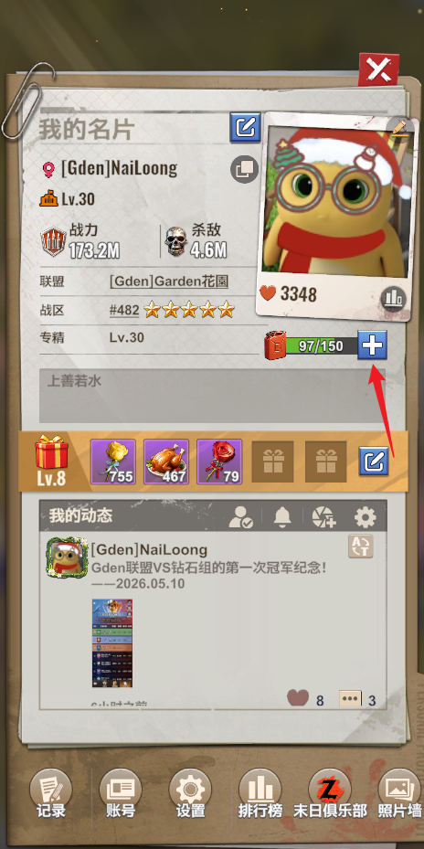
3. 联盟VS的技巧
这里可以放联盟VS报名、阶段目标、积分获取、协同作战和成员分工。
返回目录4. 资源获取
这里可以放金币、粮食、木材、加速道具、钻石和活动奖励的获取方式。
返回目录5. R4/R5的公告和联盟成员管理
这里可以放公告模板、成员活跃度要求、踢人规则、资源援助和联盟纪律。
返回目录6. 相关攻略网站推荐
这里可以放外部攻略链接、视频链接、表格链接或联盟内部文档链接。
返回目录